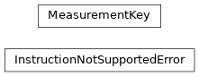

qiskit_iqm.qiskit_to_iqm¶
Conversion tools from Qiskit to IQM representation.
Functions
|
Construct a unique name for a qubit based on its index in the circuit. |
|
Serialize a quantum circuit into the IQM data transfer format. |
|
Serialize a qubit mapping into the IQM data transfer format. |
Classes
|
Unique key associated with a measurement instruction. |
Exceptions
Raised when a given instruction is not supported by the IQM server. |
Inheritance
